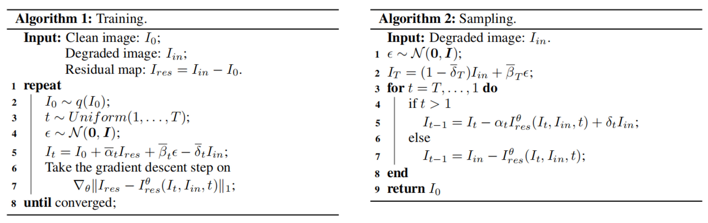

Selective Hourglass Mapping
Full algorithm

The goal of our method is to achieve strong condition guidance and shared distribution mapping at the same time.
We adopt the condition mechanism of RDDM and integrate a shared distribution term (SDT) into the diffusion algorithm that
achieves the synergistic effect between two components. The whole algorithm contains Distribution Approaching Forward Process, Distribution Diffusing Reverse Process and Universal Training Objective.
Distribution Approaching Forward Process
$\begin{equation}
\begin{aligned}
I_t &= I_{t-1}+\alpha_tI_{res}+ \beta_t\epsilon_{t-1}-\delta_tI_{in} \\
&= I_{t-2}+(\alpha_t+\alpha_{t-1})I_{res}+ \sqrt{\beta^2_t+\beta^2_{t-1}}\epsilon_{t-2} -(\delta_t+\delta_{t-1})I_{in} \\
&= I_{t-3} \dots \\
&= I_0+\overline{\alpha}_tI_{res}+\overline{\beta}_t\epsilon-\overline{\delta}_tI_{in},
\end{aligned}
\end{equation}$
Our forward process is shown above, where $\delta_tI_{in}$ is the SDT, $\delta$ is the shared distribution coefficient.
We set the value of $\overline{\delta}_t$ from 0 to 0.9, which will gradually reduce the influence of the condition. When
$t \rightarrow T$, $\overline{\alpha}_T=1$, and the formula could be rewritten as: $I_T=0.1I_{in}+\overline{\beta}_T\epsilon$,
which approaches an impure Gaussian distribution.
Distribution Diffusing Reverse Process
Following the DDPM, we use $q(I_{t-1}|I_t,I_{in},I_0^{\theta},I_{res}^{\theta})$ to simulate the distribution
of $p_{\theta}(I_{t-1}|I_t)$ and based on the Bayes theorem, we could calculate it as follows.
$\begin{equation}
\begin{aligned}
\label{eqn:bayes}
&\ p_{\theta}(I_{t-1}|I_t) \rightarrow q(I_{t-1}|I_t,I_{in},I_0^{\theta},I_{res}^{\theta}) & \\
&= q(I_t|I_{t-1},I_{in},I_{res}^{\theta})\frac{q(I_{t-1}|I_0^{\theta},I_{res}^{\theta},I_{in})}{q(I_t|I_0^{\theta},I_{res}^{\theta},I_{in})} \\
&\propto exp\left[-\frac{1}{2}((\frac{\overline{\beta}_t^2}{\beta_t^2\overline{\beta}_{t-1}^2})I_{t-1}^2-2(\frac{I_t+\delta_t I_{in}-\alpha_tI_{res}^{\theta}}{\beta_t^2} \right.\\
&\left.+\frac{I_0^{\theta}+\overline{\alpha}_{t-1}I_{res}^{\theta}-\overline{\delta}_{t-1}I_{in}}{\overline{\beta}_{t-1}^2})I_{t-1}+C(I_t,I_0^{\theta},I_{res}^{\theta},I_{in}))\right].
\end{aligned}
\end{equation}$
As the goal of the formulation is to obtain the distribution of the $I_{t-1}$, we simplify and rearrange it
into the form about the $I_{t-1}$ and $C(I_t,I_0^{\theta},I_{res}^{\theta},I_{in})$ is the term unrelated with it.
Then we calculate the mean $\mu_{\theta}(I_t, t)$ and variance $\sigma_{\theta}(I_t, t)$ of the
distribution $p_{\theta}(I_{t-1}|I_t)$ based on equation
above:
$\begin{equation}
\begin{aligned}
&\mu_{\theta}(I_t, t) = I_t - \alpha_t I_{res}^{\theta} + \delta_t I_{in} - \frac{\beta^2_t}{\overline{\beta}_t}\epsilon^{\theta} \\
&\sigma_{\theta}(I_t, t) = \frac{\beta^2_t \overline{\beta}^2_{t-1}}{\overline{\beta}^2_t},
\end{aligned}
\end{equation}$
where $I_{res}^{\theta}$ is predicted by the model and $\epsilon^{\theta}$ is obtained by the $I_{res}^{\theta}$.
Based on the reparameterization technology, if we use the sampling strategy from the DDPM, $I_{t-1}$ could be calculated as follows:
$\begin{equation}
I_{t-1} = I_t - \alpha_t I_{res}^{\theta} + \delta_t I_{in} - \frac{\beta^2_t}{\overline{\beta}_t}\epsilon^{\theta} + \frac{\beta_t \overline{\beta}_{t-1}}{\overline{\beta}_t}\epsilon_*,
\end{equation}$
where $\epsilon_*$ is the random Gaussian noise. In this paper, to accelerate the sampling speed,
we use the sampling strategy of DDIM and $I_{t-1}$ is calculated by:
$\begin{equation}
I_{t-1} = I_t - \alpha_t I_{res}^{\theta} + \delta_t I_{in}.
\end{equation}$
Based on the ddim equation, we could iteratively recover the sample from the $I_T$ to $I_{T-k}, I_{T-2k}, \dots, I_k, I_0$
where k means skip steps followed DDIM.
Universal Training Objective
Although our algorithm is different from standard diffusion models, as we both approach the different degraded distributions to
one shared distribution, we reference DDPM and conduct the meticulous derivation of the training objective as follows:
$\begin{equation}
\mathcal{L}(\theta) = D_{KL}(q(I_{t-1}|I_t,I_0,I_{res},I_{in}) || p_{\theta}(I_{t-1}|I_t)).
\end{equation}$
As mentioned in VAE, the Kullback-Leibler divergence of two Gaussian distributions could be simplified to the difference of their mean, the function is transformed as:
$\begin{equation}
\begin{aligned}
\mathcal{L}(\theta) &= \mathbb{E}_{q(I_t|I_0)}\left[\Vert \mu(I_t,I_0) - \mu_{\theta}(I_t,t) \Vert^2\right] \\
&= \mathbb{E}_{t,\epsilon,I_{res}}\left[\Vert I_t - \alpha_t I_{res} + \delta_t I_{in} - \frac{\beta^2_t}{\overline{\beta}_t}\epsilon - \right.\\
& \left.\quad (I_t - \alpha_t I_{res}^{\theta} + \delta_t I_{in} - \frac{\beta^2_t}{\overline{\beta}_t}\epsilon^{\theta}) \Vert^2\right] \\
&= \mathbb{E}_{t,\epsilon,I_{res}}\left[\Vert \alpha_t(I_{res}^{\theta} - I_{res})+\frac{\beta^2_t}{\overline{\beta}_t}(\epsilon^{\theta}-\epsilon) \Vert^2\right], \\
\end{aligned}
\end{equation}$
where $I_{res}$, $\epsilon$ mean established value in the forward process and $I_{res}^{\theta}$, $\epsilon^{\theta}$ mean predicted result in the reverse process.
Referring to the official code of DDPM, predicting the noise or the input is essentially equivalent, so we directly use the model to predict the
residual $I_{res}^{\theta}$, the $\epsilon^{\theta}$ could be derivated by it. According to previous works, when predicting the input,
$L_1$ loss performs better than $L_2$ loss. Based on the experimental and theoretical basis above, our final loss function is simplified as follows:
$\begin{equation}
\mathcal{L}(\theta)_{simple} = \mathbb{E}_{t,I_t,I_{res}}\left[\Vert I_{res} - I^{\theta}_{res}(I_t,t) \Vert_1\right].
\end{equation}$